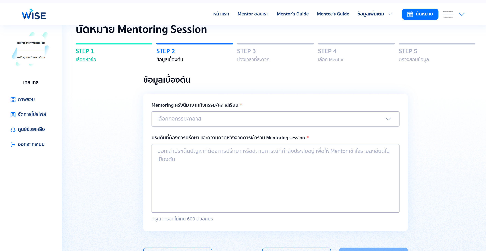

01
Wise Mentoring Ship
An on-demand mentoring platform for Thai universities. A student books a session, a mentor accepts, and an admin can see the whole queue. I built the five-step booking flow front end through to the API, along with registration, mentor handling and the back-office.
React · NestJS · TypeScript · PostgreSQL · GCP · LINE API
